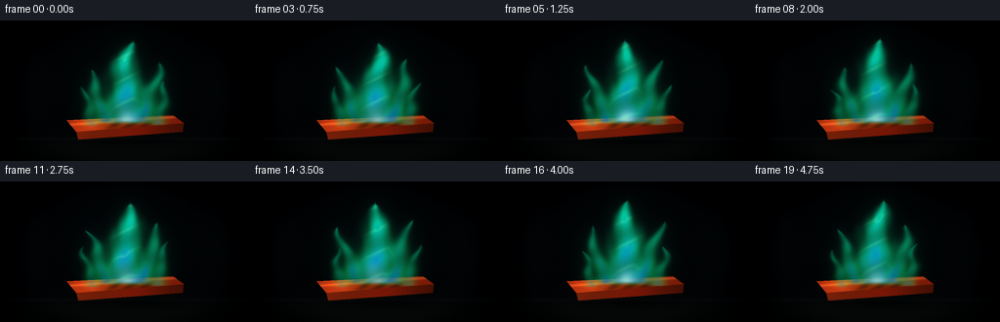
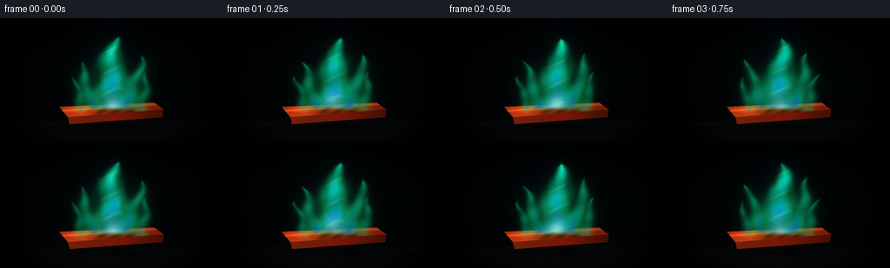

CODING AGENTS AS PIXEL WORLD MODELS
traex/GPT-5.6-Sol · phygen_126
点击播放 · 原生 RGB 像素
逐轮保存的候选
回放视频、检查图与代码变化。
每份候选均可单独播放。实际图片检查记录在下方工具轨迹中。
候选 01播放与检查图
点击播放 · 原生 RGB 像素


展开代码变化
--- 上一保存版本
+++ 本次保存版本
@@ -0,0 +1,278 @@
+from pathlib import Path
+import math
+import numpy as np
+from PIL import Image, ImageDraw, ImageFilter
+import artifact_io
+
+# Procedural, deterministic macro shot of a copper strip burning with its
+# characteristic turquoise/emerald flame. Everything is rendered at 3x and
+# downsampled for clean silhouettes and soft photographic bloom.
+W, H, N = 256, 144, 20
+S = 3
+WW, HH = W*S, H*S
+Y, X = np.mgrid[0:HH, 0:WW].astype(np.float32)
+x = X / S
+y = Y / S
+rng = np.random.default_rng(126)
+
+
+def smoothstep(a, b, v):
+ q = np.clip((v-a)/(b-a), 0.0, 1.0)
+ return q*q*(3.0-2.0*q)
+
+
+def over(dst, rgb, alpha):
+ """Straight-alpha over, where dst and rgb are float RGB."""
+ if alpha.ndim == 2:
+ alpha = alpha[..., None]
+ return dst*(1.0-alpha) + rgb*alpha
+
+
+def pil_layer(canvas, im):
+ arr = np.asarray(im).astype(np.float32)/255.0
+ return over(canvas, arr[..., :3], arr[..., 3]/255.0)
+
+
+def blur_mask(mask, radius):
+ u8 = np.uint8(np.clip(mask, 0, 1)*255)
+ return np.asarray(Image.fromarray(u8).filter(ImageFilter.GaussianBlur(radius*S)), dtype=np.float32)/255.0
+
+# Fixed fine-grain texture (kept subtle so the fire remains temporally coherent).
+fixed_grain = rng.normal(0, 1, (HH, WW)).astype(np.float32)
+fixed_grain = np.asarray(Image.fromarray(np.uint8(np.clip(fixed_grain*22+128, 0, 255))).filter(
+ ImageFilter.GaussianBlur(0.18*S)), dtype=np.float32)/255.0 - .5
+
+# Stable points for sparks and copper blemishes.
+spark_seed = [(105.0, 80.0, .17, -8.3), (149.0, 74.0, .41, -9.6),
+ (128.0, 60.0, .73, -11.0), (163.0, 87.0, .08, -7.3),
+ (93.0, 91.0, .55, -8.8)]
+
+
+def make_background(t):
+ # Charcoal studio/lab environment with a very slight cool atmospheric halo.
+ r = np.sqrt(((x-128)/122)**2 + ((y-75)/88)**2)
+ halo = np.exp(-(((x-128)/77)**2 + ((y-69)/64)**2)*1.8)
+ lower = smoothstep(97, 145, y)
+ bg = np.empty((HH, WW, 3), np.float32)
+ bg[..., 0] = .011 + .010*halo + .018*lower
+ bg[..., 1] = .016 + .024*halo + .014*lower
+ bg[..., 2] = .020 + .029*halo + .012*lower
+ # Broad, out-of-focus vertical shapes hint at a dark workshop.
+ bg += np.exp(-((x-31)/17)**2)[..., None]*np.array([.006,.008,.009])
+ bg += np.exp(-((x-227)/21)**2)[..., None]*np.array([.005,.009,.010])
+ # Bench plane and soft seam.
+ plane = smoothstep(117, 129, y)[..., None]
+ bench_col = np.array([.037, .043, .042], np.float32)
+ bg = bg*(1-plane*.54) + bench_col*plane*.54
+ seam = np.exp(-((y-121.0)/1.6)**2)[..., None]
+ bg += seam*np.array([.015,.018,.017])
+ bg -= (smoothstep(.72, 1.13, r)*.022)[..., None]
+ bg += fixed_grain[..., None]*.004
+ return np.clip(bg, 0, 1)
+
+
+def flame_component(base_x, base_y, top_y, base_w, drift, phase, t):
+ """An advecting, tapered flame tongue with a smoothly moving centerline."""
+ z = (base_y-y)/(base_y-top_y)
+ zc = np.clip(z, 0, 1)
+ # Several incommensurate oscillations: no random frame-to-frame popping.
+ sway = (2.0 + 2.7*zc)*np.sin(2*np.pi*t*.46 + phase + zc*7.0)
+ sway += 1.15*np.sin(2*np.pi*t*.83 + phase*1.7 - zc*11.0)
+ center = base_x + drift*(zc**1.12) + sway*zc
+ edge_noise = (1.0 + .10*np.sin(x*.225 + y*.151 - t*5.0 + phase)
+ + .055*np.sin(x*.49-y*.107+t*7.3+phase*2.0))
+ width = (.60 + base_w*(np.maximum(0, 1-zc)**.64))*edge_noise
+ q = np.abs(x-center)/np.maximum(width, .4)
+ core_shape = np.exp(-1.85*q**2.15)
+ valid = smoothstep(-.025, .045, z) * (1-smoothstep(.96, 1.035, z))
+ # Rising striation is intensity modulation, not an unstable boundary.
+ flow = .82 + .18*np.sin((1-zc)*16.0 - t*9.3 + phase + x*.08)
+ return np.clip(core_shape*valid*flow, 0, 1), q, zc
+
+
+def flame_fields(t):
+ # Dominant central tongue and asymmetrical smaller tongues. Their union
+ # gives the forked, constantly burning silhouette associated with a real flame.
+ specs = [
+ (128, 105, 21, 27.0, 3.5, .20, 1.00),
+ (108, 105, 48, 11.5, -17.0, 1.42, .74),
+ (146, 105, 42, 13.5, 18.0, 2.55, .78),
+ (94, 108, 69, 8.0, -8.0, 3.70, .55),
+ (161, 107, 64, 9.0, 10.0, 4.25, .59),
+ ]
+ total = np.zeros((HH, WW), np.float32)
+ central = np.zeros_like(total)
+ blue_weight = np.zeros_like(total)
+ z_weight = np.zeros_like(total)
+ for i, (bx, by, ty, bw, dr, ph, strength) in enumerate(specs):
+ # Tiny breathing of tips, smooth and periodic, while the base never moves.
+ ty2 = ty + 2.4*math.sin(2*math.pi*t*.39 + ph)
+ m, q, zc = flame_component(bx, by, ty2, bw, dr, ph, t)
+ m *= strength
+ total = 1-(1-total)*(1-np.clip(m, 0, .93))
+ if i == 0:
+ central = m
+ blue_weight += m*(1-zc)**1.55*np.exp(-q*q*2.4)
+ z_weight += m*zc
+ zmean = z_weight/(total+1e-4)
+ return np.clip(total, 0, 1), np.clip(central, 0, 1), np.clip(blue_weight, 0, 1), zmean
+
+
+def render_tongs_and_copper(canvas, t, flame_mask):
+ # Contact shadow on the bench.
+ sh = np.exp(-(((x-139)/72)**2 + ((y-124)/7.2)**2)*2.0)*.46
+ canvas = over(canvas, np.zeros_like(canvas), sh)
+
+ # Steel tongs enter from the right and sit behind the sample.
+ layer = Image.new('RGBA', (WW, HH), (0,0,0,0))
+ d = ImageDraw.Draw(layer)
+ P = lambda pts: [(int(a*S), int(b*S)) for a,b in pts]
+ d.polygon(P([(171,104),(256,116),(256,122),(174,111)]), fill=(35,43,45,255))
+ d.polygon(P([(174,111),(256,128),(256,134),(171,115)]), fill=(22,28,30,255))
+ d.line(P([(179,106),(255,118)]), fill=(102,112,110,120), width=S)
+ d.line(P([(180,112),(255,130)]), fill=(72,82,82,90), width=S)
+ d.polygon(P([(169,101),(188,103),(188,113),(169,114)]), fill=(48,55,54,255))
+ canvas = pil_layer(canvas, layer)
+
+ # Masks for a thick, perspective copper coupon.
+ top_poly = [(68,102),(177,97),(188,105),(78,114)]
+ front_poly = [(78,114),(188,105),(187,114),(80,122)]
+ topm_im = Image.new('L',(WW,HH),0); ImageDraw.Draw(topm_im).polygon(P(top_poly), fill=255)
+ frm_im = Image.new('L',(WW,HH),0); ImageDraw.Draw(frm_im).polygon(P(front_poly), fill=255)
+ topm = np.asarray(topm_im,dtype=np.float32)/255
+ frm = np.asarray(frm_im,dtype=np.float32)/255
+
+ # Front edge: deep, reflective copper.
+ directional = np.clip((x-65)/128,0,1)
+ front = np.zeros_like(canvas)
+ front[...,0] = .25 + .23*(1-directional) + .11*np.exp(-((x-139)/28)**2)
+ front[...,1] = .065 + .075*(1-directional)
+ front[...,2] = .025 + .025*(1-directional)
+ front += fixed_grain[...,None]*.025
+ canvas = over(canvas, np.clip(front,0,1), frm*.99)
+
+ # Upper face with copper anisotropic shine, soot/oxide and green reflection.
+ u = np.clip((x-68)/120,0,1)
+ hot = np.exp(-(((x-128)/31)**2 + ((y-104)/7.5)**2))
+ shine = np.exp(-((y-(106.9-.073*(x-68)))/1.4)**2)
+ bands = .5+.5*np.sin(x*.31-y*.77)
+ copper = np.zeros_like(canvas)
+ copper[...,0] = .43 + .29*np.exp(-((u-.18)/.23)**2) + .22*hot + .035*bands
+ copper[...,1] = .105 + .11*np.exp(-((u-.18)/.25)**2) + .09*hot
+ copper[...,2] = .035 + .035*np.exp(-((u-.16)/.24)**2)
+ copper += shine[...,None]*np.array([.22,.12,.055])
+ # Charred copper oxide directly below the flame, with uneven edges.
+ oxide = np.exp(-((x-132)/27)**4 - ((y-104.8)/7.0)**4)
+ oxide *= .72 + .22*np.sin(x*.38+y*.54)
+ copper *= (1-oxide[...,None]*.67)
+ copper += fixed_grain[...,None]*.035
+ # Characteristic green light reflected in the upper rim.
+ green_reflect = blur_mask(flame_mask, 4.0)*topm
+ copper += green_reflect[...,None]*np.array([.015,.16,.095])
+ canvas = over(canvas, np.clip(copper,0,1), topm*.995)
+
+ # Crisp bevels and small scratches, clipped visually within the top polygon.
+ detail = Image.new('RGBA',(WW,HH),(0,0,0,0)); dd=ImageDraw.Draw(detail)
+ dd.line(P(top_poly+[top_poly[0]]), fill=(231,113,47,180), width=max(1,S//2))
+ dd.line(P([(78,114),(188,105)]), fill=(255,139,54,140), width=S)
+ dd.line(P([(80,121),(187,113)]), fill=(67,23,12,210), width=S)
+ scratches = [((82,107),(103,106)),((152,102),(174,101)),((91,111),(115,109)),
+ ((159,108),(179,106)),((73,105),(85,105))]
+ for k,(a,b) in enumerate(scratches):
+ dd.line(P([a,b]), fill=(245,145,77,65 if k%2 else 90), width=1*S)
+ # A broken green-hot line along the burning surface.
+ dd.line(P([(102,104),(120,102),(137,101),(154,101),(169,100)]),
+ fill=(78,255,164,110), width=S)
+ canvas = pil_layer(canvas, detail)
+
+ # Local orange incandescence in the oxidized coupon center.
+ inc = np.exp(-(((x-129)/23)**2 + ((y-106)/5.2)**2)*1.7)*topm
+ canvas = over(canvas, np.dstack([np.ones_like(inc)*1.0,
+ np.ones_like(inc)*.25,
+ np.ones_like(inc)*.045]), inc*.12)
+ return canvas
+
+
+def render_frame(i):
+ t = i/4.0
+ canvas = make_background(t)
+ flame, central, blue, zmean = flame_fields(t)
+
+ # Multi-scale colored bloom before the solid objects, so it illuminates the scene.
+ broad = blur_mask(flame, 9.0)
+ tight = blur_mask(flame, 3.2)
+ canvas = over(canvas, np.dstack([np.full_like(broad,.02),
+ np.full_like(broad,.92),
+ np.full_like(broad,.52)]), broad*.20)
+ canvas = over(canvas, np.dstack([np.full_like(tight,.03),
+ np.full_like(tight,1.0),
+ np.full_like(tight,.68)]), tight*.15)
+
+ canvas = render_tongs_and_copper(canvas, t, flame)
+
+ # Crisp translucent flame body. Edge = emerald; center = turquoise; lower
+ # inner cone = saturated cobalt-blue; hottest base has a pale mint core.
+ edge = np.zeros_like(canvas)
+ edge[...,0] = .018 + .055*(1-zmean)
+ edge[...,1] = .78 + .18*(1-zmean)
+ edge[...,2] = .31 + .26*zmean
+ inner_w = np.clip(central*.84,0,1)
+ teal = np.dstack([np.full_like(flame,.025), np.full_like(flame,.98), np.full_like(flame,.78)])
+ fire_rgb = edge*(1-inner_w[...,None]) + teal*inner_w[...,None]
+ bw = np.clip(blue*.92,0,1)[...,None]
+ cobalt = np.dstack([np.full_like(flame,.018),np.full_like(flame,.35),np.full_like(flame,1.0)])
+ fire_rgb = fire_rgb*(1-bw)+cobalt*bw
+ mint = central*np.exp(-((y-100)/12)**2)*np.exp(-((x-128)/12)**2)
+ mint = np.clip(mint*.8,0,1)[...,None]
+ pale = np.dstack([np.full_like(flame,.68),np.full_like(flame,1.0),np.full_like(flame,.84)])
+ fire_rgb = fire_rgb*(1-mint)+pale*mint
+ # Alpha is translucent around edges, nearly opaque only in the hot lower core.
+ alpha = np.clip(flame*.66 + central*.15 + mint[...,0]*.12,0,.91)
+ canvas = over(canvas, np.clip(fire_rgb,0,1), alpha)
+
+ # Fine bright filaments advect upward inside the flame.
+ filament = central * np.maximum(0, np.sin((1-zmean)*22 - t*8.2 + x*.13))**8
+ filament *= np.exp(-((x-(128+3*np.sin(t*2.1)))/15)**2)*.25
+ canvas = over(canvas, np.dstack([np.full_like(flame,.45),np.ones_like(flame),
+ np.full_like(flame,.70)]), filament)
+
+ # A handful of tiny, short-lived copper-green particles. Their smooth upward
+ # trajectories reinforce combustion without turning the scene into fireworks.
+ sparks = Image.new('RGBA',(WW,HH),(0,0,0,0)); sd=ImageDraw.Draw(sparks)
+ for k,(sx,sy,phase,vy) in enumerate(spark_seed):
+ age = (t*.34+phase)%1.0
+ px = sx + 5*math.sin(age*5.2+k*1.7) + (k-2)*1.3
+ py = sy + vy*age*4.0
+ vis = math.sin(math.pi*age)**2
+ if vis>.08:
+ rr = (.42 + .40*vis)*S
+ box=[int(px*S-rr),int(py*S-rr),int(px*S+rr),int(py*S+rr)]
+ sd.ellipse(box, fill=(87,255,175,int(205*vis)))
+ spark_glow = sparks.filter(ImageFilter.GaussianBlur(1.7*S))
+ canvas = pil_layer(canvas, spark_glow)
+ canvas = pil_layer(canvas, sparks)
+
+ # Lens vignette and very light sensor grain; downsampling melds everything.
+ rr = np.sqrt(((x-128)/150)**2 + ((y-72)/102)**2)
+ vignette = smoothstep(.52,1.05,rr)*.26
+ canvas *= (1-vignette[...,None])
+ frame_noise = np.random.default_rng(9000+i).normal(0,.0022,canvas.shape[:2]).astype(np.float32)
+ canvas += frame_noise[...,None]
+ canvas = np.clip(canvas,0,1)
+ im = Image.fromarray(np.uint8(canvas*255+.5),'RGB')
+ im = im.resize((W,H),Image.Resampling.LANCZOS)
+ # A restrained final bloom-like contrast curve.
+ arr = np.asarray(im).astype(np.float32)/255
+ arr = np.clip((arr-.012)*1.045,0,1)
+ return np.uint8(arr*255+.5)
+
+
+def main():
+ frames = np.stack([render_frame(i) for i in range(N)], axis=0)
+ artifact_io.save(frames, Path(__file__).resolve().parent)
+ print('saved', frames.shape, frames.dtype,
+ 'range', int(frames.min()), int(frames.max()))
+
+
+if __name__ == '__main__':
+ main()
可观测工具轨迹
实际执行的命令与返回图片。
命令 1exit 0
/bin/bash -lc "cat prompt.txt && printf '\\n--- GENERATION_RULES ---\\n' && cat GENERATION_RULES.md"
命令 2exit 0
/bin/bash -lc "cat task_spec.json && printf '\\n--- FILES ---\\n' && find . -maxdepth 2 -type f -printf '%p\\n' | sort"
命令 3exit 0
/bin/bash -lc "command -v ffmpeg; command -v blender; command -v python3; python3 - <<'PY' mods=['PIL','numpy','cv2','imageio'] for m in mods: try: x=__import__(m); print(m,'OK',getattr(x,'__version__','')) except Exception as e: print(m,'NO',e) PY"
命令 4exit 0
/bin/bash -lc 'cat artifact_io.py'
命令 5exit 0
/bin/bash -lc "cat > generate.py <<'PY'
from pathlib import Path
import math
import numpy as np
from PIL import Image, ImageDraw, ImageFilter
import artifact_io
# Procedural, deterministic macro shot of a copper strip burning with its
# characteristic turquoise/emerald flame. Everything is rendered at 3x and
# downsampled for clean silhouettes and soft photographic bloom.
W, H, N = 256, 144, 20
S = 3
WW, HH = W*S, H*S
Y, X = np.mgrid[0:HH, 0:WW].astype(np.float32)
x = X / S
y = Y / S
rng = np.random.default_rng(126)
def smoothstep(a, b, v):
q = np.clip((v-a)/(b-a), 0.0, 1.0)
return q*q*(3.0-2.0*q)
def over(dst, rgb, alpha):
\"\"\"Straight-alpha over, where dst and rgb are float RGB.\"\"\"
if alpha.ndim == 2:
alpha = alpha[..., None]
return dst*(1.0-alpha) + rgb*alpha
def pil_layer(canvas, im):
arr = np.asarray(im).astype(np.float32)/255.0
return over(canvas, arr[..., :3], arr[..., 3]/255.0)
def blur_mask(mask, radius):
u8 = np.uint8(np.clip(mask, 0, 1)*255)
return np.asarray(Image.fromarray(u8).filter(ImageFilter.GaussianBlur(radius*S)), dtype=np.float32)/255.0
# Fixed fine-grain texture (kept subtle so the fire remains temporally coherent).
fixed_grain = rng.normal(0, 1, (HH, WW)).astype(np.float32)
fixed_grain = np.asarray(Image.fromarray(np.uint8(np.clip(fixed_grain*22+128, 0, 255))).filter(
ImageFilter.GaussianBlur(0.18*S)), dtype=np.float32)/255.0 - .5
# Stable points for sparks and copper blemishes.
spark_seed = [(105.0, 80.0, .17, -8.3), (149.0, 74.0, .41, -9.6),
(128.0, 60.0, .73, -11.0), (163.0, 87.0, .08, -7.3),
(93.0, 91.0, .55, -8.8)]
def make_background(t):
# Charcoal studio/lab environment with a very slight cool atmospheric halo.
r = np.sqrt(((x-128)/122)**2 + ((y-75)/88)**2)
halo = np.exp(-(((x-128)/77)**2 + ((y-69)/64)**2)*1.8)
lower = smoothstep(97, 145, y)
bg = np.empty((HH, WW, 3), np.float32)
bg[..., 0] = .011 + .010*halo + .018*lower
bg[..., 1] = .016 + .024*halo + .014*lower
bg[..., 2] = .020 + .029*halo + .012*lower
# Broad, out-of-focus vertical shapes hint at a dark workshop.
bg += np.exp(-((x-31)/17)**2)[..., None]*np.array([.006,.008,.009])
bg += np.exp(-((x-227)/21)**2)[..., None]*np.array([.005,.009,.010])
# Bench plane and soft seam.
plane = smoothstep(117, 129, y)[..., None]
bench_col = np.array([.037, .043, .042], np.float32)
bg = bg*(1-plane*.54) + bench_col*plane*.54
seam = np.exp(-((y-121.0)/1.6)**2)[..., None]
bg += seam*np.array([.015,.018,.017])
bg -= (smoothstep(.72, 1.13, r)*.022)[..., None]
bg += fixed_grain[..., None]*.004
return np.clip(bg, 0, 1)
def flame_component(base_x, base_y, top_y, base_w, drift, phase, t):
\"\"\"An advecting, tapered flame tongue with a smoothly moving centerline.\"\"\"
z = (base_y-y)/(base_y-top_y)
zc = np.clip(z, 0, 1)
# Several incommensurate oscillations: no random frame-to-frame popping.
sway = (2.0 + 2.7*zc)*np.sin(2*np.pi*t*.46 + phase + zc*7.0)
sway += 1.15*np.sin(2*np.pi*t*.83 + phase*1.7 - zc*11.0)
center = base_x + drift*(zc**1.12) + sway*zc
edge_noise = (1.0 + .10*np.sin(x*.225 + y*.151 - t*5.0 + phase)
+ .055*np.sin(x*.49-y*.107+t*7.3+phase*2.0))
width = (.60 + base_w*(np.maximum(0, 1-zc)**.64))*edge_noise
q = np.abs(x-center)/np.maximum(width, .4)
core_shape = np.exp(-1.85*q**2.15)
valid = smoothstep(-.025, .045, z) * (1-smoothstep(.96, 1.035, z))
# Rising striation is intensity modulation, not an unstable boundary.
flow = .82 + .18*np.sin((1-zc)*16.0 - t*9.3 + phase + x*.08)
return np.clip(core_shape*valid*flow, 0, 1), q, zc
def flame_fields(t):
# Dominant central tongue and asymmetrical smaller tongues. Their union
# gives the forked, constantly burning silhouette associated with a real flame.
specs = [
(128, 105, 21, 27.0, 3.5, .20, 1.00),
(108, 105, 48, 11.5, -17.0, 1.42, .74),
(146, 105, 42, 13.5, 18.0, 2.55, .78),
(94, 108, 69, 8.0, -8.0, 3.70, .55),
(161, 107, 64, 9.0, 10.0, 4.25, .59),
]
total = np.zeros((HH, WW), np.float32)
central = np.zeros_like(total)
blue_weight = np.zeros_like(total)
z_weight = np.zeros_like(total)
for i, (bx, by, ty, bw, dr, ph, strength) in enumerate(specs):
# Tiny breathing of tips, smooth and periodic, while the base never moves.
ty2 = ty + 2.4*math.sin(2*math.pi*t*.39 + ph)
m, q, zc = flame_component(bx, by, ty2, bw, dr, ph, t)
m *= strength
total = 1-(1-total)*(1-np.clip(m, 0, .93))
if i == 0:
central = m
blue_weight += m*(1-zc)**1.55*np.exp(-q*q*2.4)
z_weight += m*zc
zmean = z_weight/(total+1e-4)
return np.clip(total, 0, 1), np.clip(central, 0, 1), np.clip(blue_weight, 0, 1), zmean
def render_tongs_and_copper(canvas, t, flame_mask):
# Contact shadow on the bench.
sh = np.exp(-(((x-139)/72)**2 + ((y-124)/7.2)**2)*2.0)*.46
canvas = over(canvas, np.zeros_like(canvas), sh)
# Steel tongs enter from the right and sit behind the sample.
layer = Image.new('RGBA', (WW, HH), (0,0,0,0))
d = ImageDraw.Draw(layer)
P = lambda pts: [(int(a*S), int(b*S)) for a,b in pts]
d.polygon(P([(171,104),(256,116),(256,122),(174,111)]), fill=(35,43,45,255))
d.polygon(P([(174,111),(256,128),(256,134),(171,115)]), fill=(22,28,30,255))
d.line(P([(179,106),(255,118)]), fill=(102,112,110,120), width=S)
d.line(P([(180,112),(255,130)]), fill=(72,82,82,90), width=S)
d.polygon(P([(169,101),(188,103),(188,113),(169,114)]), fill=(48,55,54,255))
canvas = pil_layer(canvas, layer)
# Masks for a thick, perspective copper coupon.
top_poly = [(68,102),(177,97),(188,105),(78,114)]
front_poly = [(78,114),(188,105),(187,114),(80,122)]
topm_im = Image.new('L',(WW,HH),0); ImageDraw.Draw(topm_im).polygon(P(top_poly), fill=255)
frm_im = Image.new('L',(WW,HH),0); ImageDraw.Draw(frm_im).polygon(P(front_poly), fill=255)
topm = np.asarray(topm_im,dtype=np.float32)/255
frm = np.asarray(frm_im,dtype=np.float32)/255
# Front edge: deep, reflective copper.
directional = np.clip((x-65)/128,0,1)
front = np.zeros_like(canvas)
front[...,0] = .25 + .23*(1-directional) + .11*np.exp(-((x-139)/28)**2)
front[...,1] = .065 + .075*(1-directional)
front[...,2] = .025 + .025*(1-directional)
front += fixed_grain[...,None]*.025
canvas = over(canvas, np.clip(front,0,1), frm*.99)
# Upper face with copper anisotropic shine, soot/oxide and green reflection.
u = np.clip((x-68)/120,0,1)
hot = np.exp(-(((x-128)/31)**2 + ((y-104)/7.5)**2))
shine = np.exp(-((y-(106.9-.073*(x-68)))/1.4)**2)
bands = .5+.5*np.sin(x*.31-y*.77)
copper = np.zeros_like(canvas)
copper[...,0] = .43 + .29*np.exp(-((u-.18)/.23)**2) + .22*hot + .035*bands
copper[...,1] = .105 + .11*np.exp(-((u-.18)/.25)**2) + .09*hot
copper[...,2] = .035 + .035*np.exp(-((u-.16)/.24)**2)
copper += shine[...,None]*np.array([.22,.12,.055])
# Charred copper oxide directly below the flame, with uneven edges.
oxide = np.exp(-((x-132)/27)**4 - ((y-104.8)/7.0)**4)
oxide *= .72 + .22*np.sin(x*.38+y*.54)
copper *= (1-oxide[...,None]*.67)
copper += fixed_grain[...,None]*.035
# Characteristic green light reflected in the upper rim.
green_reflect = blur_mask(flame_mask, 4.0)*topm
copper += green_reflect[...,None]*np.array([.015,.16,.095])
canvas = over(canvas, np.clip(copper,0,1), topm*.995)
# Crisp bevels and small scratches, clipped visually within the top polygon.
detail = Image.new('RGBA',(WW,HH),(0,0,0,0)); dd=ImageDraw.Draw(detail)
dd.line(P(top_poly+[top_poly[0]]), fill=(231,113,47,180), width=max(1,S//2))
dd.line(P([(78,114),(188,105)]), fill=(255,139,54,140), width=S)
dd.line(P([(80,121),(187,113)]), fill=(67,23,12,210), width=S)
scratches = [((82,107),(103,106)),((152,102),(174,101)),((91,111),(115,109)),
((159,108),(179,106)),((73,105),(85,105))]
for k,(a,b) in enumerate(scratches):
dd.line(P([a,b]), fill=(245,145,77,65 if k%2 else 90), width=1*S)
# A broken green-hot line along the burning surface.
dd.line(P([(102,104),(120,102),(137,101),(154,101),(169,100)]),
fill=(78,255,164,110), width=S)
canvas = pil_layer(canvas, detail)
# Local orange incandescence in the oxidized coupon center.
inc = np.exp(-(((x-129)/23)**2 + ((y-106)/5.2)**2)*1.7)*topm
canvas = over(canvas, np.dstack([np.ones_like(inc)*1.0,
np.ones_like(inc)*.25,
np.ones_like(inc)*.045]), inc*.12)
return canvas
def render_frame(i):
t = i/4.0
canvas = make_background(t)
flame, central, blue, zmean = flame_fields(t)
# Multi-scale colored bloom before the solid objects, so it illuminates the scene.
broad = blur_mask(flame, 9.0)
tight = blur_mask(flame, 3.2)
canvas = over(canvas, np.dstack([np.full_like(broad,.02),
np.full_like(broad,.92),
np.full_like(broad,.52)]), broad*.20)
canvas = over(canvas, np.dstack([np.full_like(tight,.03),
np.full_like(tight,1.0),
np.full_like(tight,.68)]), tight*.15)
canvas = render_tongs_and_copper(canvas, t, flame)
# Crisp translucent flame body. Edge = emerald; center = turquoise; lower
# inner cone = saturated cobalt-blue; hottest base has a pale mint core.
edge = np.zeros_like(canvas)
edge[...,0] = .018 + .055*(1-zmean)
edge[...,1] = .78 + .18*(1-zmean)
edge[...,2] = .31 + .26*zmean
inner_w = np.clip(central*.84,0,1)
teal = np.dstack([np.full_like(flame,.025), np.full_like(flame,.98), np.full_like(flame,.78)])
fire_rgb = edge*(1-inner_w[...,None]) + teal*inner_w[...,None]
bw = np.clip(blue*.92,0,1)[...,None]
cobalt = np.dstack([np.full_like(flame,.018),np.full_like(flame,.35),np.full_like(flame,1.0)])
fire_rgb = fire_rgb*(1-bw)+cobalt*bw
mint = central*np.exp(-((y-100)/12)**2)*np.exp(-((x-128)/12)**2)
mint = np.clip(mint*.8,0,1)[...,None]
pale = np.dstack([np.full_like(flame,.68),np.full_like(flame,1.0),np.full_like(flame,.84)])
fire_rgb = fire_rgb*(1-mint)+pale*mint
# Alpha is translucent around edges, nearly opaque only in the hot lower core.
alpha = np.clip(flame*.66 + central*.15 + mint[...,0]*.12,0,.91)
canvas = over(canvas, np.clip(fire_rgb,0,1), alpha)
# Fine bright filaments advect upward inside the flame.
filament = central * np.maximum(0, np.sin((1-zmean)*22 - t*8.2 + x*.13))**8
filament *= np.exp(-((x-(128+3*np.sin(t*2.1)))/15)**2)*.25
canvas = over(canvas, np.dstack([np.full_like(flame,.45),np.ones_like(flame),
np.full_like(flame,.70)]), filament)
# A handful of tiny, short-lived copper-green particles. Their smooth upward
# trajectories reinforce combustion without turning the scene into fireworks.
sparks = Image.new('RGBA',(WW,HH),(0,0,0,0)); sd=ImageDraw.Draw(sparks)
for k,(sx,sy,phase,vy) in enumerate(spark_seed):
age = (t*.34+phase)%1.0
px = sx + 5*math.sin(age*5.2+k*1.7) + (k-2)*1.3
py = sy + vy*age*4.0
vis = math.sin(math.pi*age)**2
if vis>.08:
rr = (.42 + .40*vis)*S
box=[int(px*S-rr),int(py*S-rr),int(px*S+rr),int(py*S+rr)]
sd.ellipse(box, fill=(87,255,175,int(205*vis)))
spark_glow = sparks.filter(ImageFilter.GaussianBlur(1.7*S))
canvas = pil_layer(canvas, spark_glow)
canvas = pil_layer(canvas, sparks)
# Lens vignette and very light sensor grain; downsampling melds everything.
rr = np.sqrt(((x-128)/150)**2 + ((y-72)/102)**2)
vignette = smoothstep(.52,1.05,rr)*.26
canvas *= (1-vignette[...,None])
frame_noise = np.random.default_rng(9000+i).normal(0,.0022,canvas.shape[:2]).astype(np.float32)
canvas += frame_noise[...,None]
canvas = np.clip(canvas,0,1)
im = Image.fromarray(np.uint8(canvas*255+.5),'RGB')
im = im.resize((W,H),Image.Resampling.LANCZOS)
# A restrained final bloom-like contrast curve.
arr = np.asarray(im).astype(np.float32)/255
arr = np.clip((arr-.012)*1.045,0,1)
return np.uint8(arr*255+.5)
def main():
frames = np.stack([render_frame(i) for i in range(N)], axis=0)
artifact_io.save(frames, Path(__file__).resolve().parent)
print('saved', frames.shape, frames.dtype,
'range', int(frames.min()), int(frames.max()))
if __name__ == '__main__':
main()
PY
python3 generate.py"命令 6exit 0
/bin/bash -lc "python3 - <<'PY'
from pathlib import Path
import numpy as np
from PIL import Image
p=Path('.')
z=np.load('pixels.npz')['pixels']
print('packed tensor',z.shape,z.dtype)
ims=np.stack([np.array(Image.open(f).convert('RGB')) for f in sorted((p/'frames').glob('*.png'))])
print('frames',ims.shape,ims.dtype,'count',len(ims))
print('means',np.round(ims.mean(axis=(1,2,3)),2).tolist())
d=np.abs(np.diff(ims.astype(np.int16),axis=0))
print('delta MAE per step',np.round(d.mean(axis=(1,2,3)),3).tolist())
print('bright green pixels/frame',((ims[:,:,:,1]>150)&(ims[:,:,:,1]>ims[:,:,:,0]*1.5)&(ims[:,:,:,1]>ims[:,:,:,2]*1.05)).sum(axis=(1,2)).tolist())
print('artifacts')
for f in ['pixels.npz','inspection.png','transition_check.png','index.html']:
q=p/f; print(f,q.exists(),q.stat().st_size if q.exists() else None)
PY"命令 7exit 0
/bin/bash -lc 'python3 -m py_compile generate.py && git status --short 2>/dev/null || true && du -sh .'
保存候选 1 份；完成命令 7 次；可验证图片返回 0 张。原始 API 响应与完整日志保留在本地。